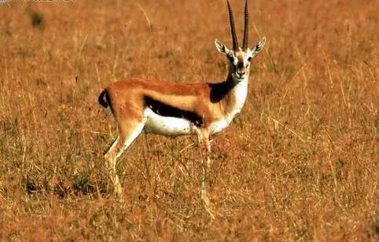
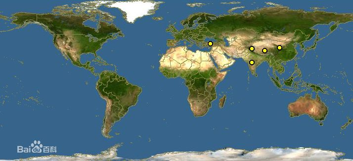
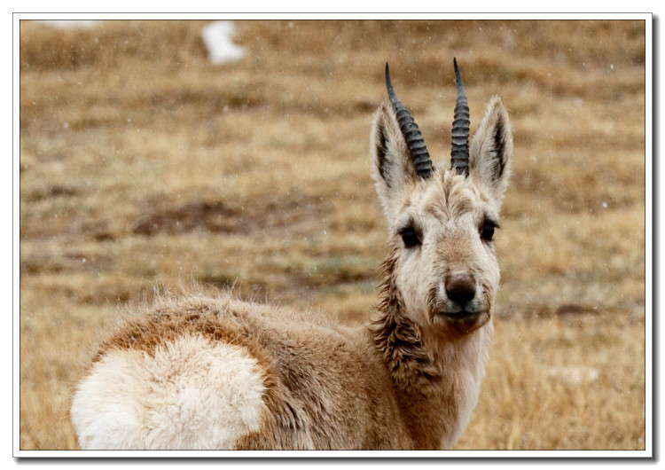

藏羚羊
外形特征
藏羚羊体形也与黄羊相似，但比黄羊大，也显得健壮。体长为117-146厘米，尾长15-20厘米，肩高75-91厘米，体重45-60千克。通体的被毛都非常丰厚细密，呈淡黄褐色，略染一些粉红色，腹部、四肢内侧为白色，雄兽的面部和四肢的前缘为黑色或黑褐色。 头部宽而长，雄兽的吻部粗壮多毛，上唇宽厚，没有眶下腺。鼻部肿胀而略微隆起，鼻腔宽阔，向两侧呈半球状鼓胀，鼻端被毛，鼻孔较大，略向下弯。每个鼻孔内还有1个小囊，其作用是为了帮助在空气稀薄的高原上进行呼吸，以利于快速奔跑。 四肢强健而匀称，蹄子侧扁而尖。尾巴较短，端部尖细。鼠鼷部有两个对称的皮囊状鼠鼷腺，非常发达，能分泌有香味的黄褐色分泌物。 雌兽没有角。雄兽有角，角形特殊，有20多个明显的横棱，细长似鞭，乌黑发亮，从头顶几乎垂直向上，仅光滑的角尖稍微有一点向内倾斜，长度一般为60厘米左右，最长的记录是72.4厘米，非常漂亮。因为两只角长得十分匀称，由侧面远远望去，却好像只有一只角，所以被称为“独角兽”或“一角兽”。

栖息环境
栖息于海拔4600-6000米的荒漠草甸高原、高原草原等环境中，尤其喜欢水源附近的平坦草滩。藏羚羊生存的地区东西相跨达到1600公里，季节性迁徙是它们重要的生态特征。因为母羚羊的产羔地主要在乌兰乌拉湖、卓乃湖、可可西里湖，太阳湖等地。
高山荒漠草原。这些区域植被稀少，并均为高原草本植物。此外，这些区域气温较低，很多本地年被雪掩盖期超越6个月。在青藏高原一同恶劣的天然环境中，为寻找满意的食物和抵挡酷寒，经过长时刻习气，藏羚羊构成了集群迁徙的习性，而且其身体上生长有一层保暖性极好的绒毛。
生活习性
藏羚羊的活动很复杂，某些藏羚羊会长期居住一地，还有一些有迁徙习惯。雌性和雄性藏羚羊活动模式不同。成年雌性藏羚羊和它们的雌性后代每年从冬季交配地到夏季产羔地迁徙行程300公里。年轻雄性藏羚羊会离开群落，同其它年轻或成年雄性藏羚羊聚到一起，直至最终形成一个混合的群落。
每年四月底，公母羚羊开始分群而居，未满一岁的公仔也会和母羚羊分开，到五、六月，母羊与它的雌仔迁徙前往产羔地产仔，然后母羚又率幼仔原路返回，完成一次迁徙过程。早晚觅食，善于奔跑。夏季雌性沿固定路线向北迁徙，6-7月产仔之后返回越冬地与雄羊合群。有少数种群不迁徙。
性情胆怯，常隐藏在岩穴中，或者在较为平坦的地方挖掘一个小浅坑，将整个身子匿伏其内，只露出头部，既可以躲避风沙，又可以发现敌害。藏羚羊善于奔跑，最高时速可达80千米，寿命最长8年左右。
藏羚主要在清晨和傍晚觅食。但在食物条件比较贫乏的冬春季节，其觅食时间就延长，所以白天经常可以看到它们在四处活动；而在食物充裕的夏秋季节，则中午都在湖边、河岸或较低凹处休息。早晨和黄昏出来活动，到溪边觅食禾本科和莎草科的杂草等，苔藓、开黄色小花的针茅草和拓荒先锋地衣之类的低等植物是它们的美味。平时多结成3-5只，或者10只左右的小群活动，逃逸时雄兽在前，依次跟随，很有次序。但有时会突然出现发疯似地狂奔乱跳，这是因为有蝇蛆钻入了它的屁股内。它的宽大的鼻腔有利于呼吸，所以能在空气稀薄的高原上奔跑，时速可达80公里，常使狼等食肉兽类望而兴叹。 [3] [5]
另外，当狼突然逼近的时候，藏羚群体往往并不四散奔逃，而是聚在一起，低着头，以长角为武器与狼对峙，也常常使狼无从下手，只得作罢。冬末春初为交配季节，雄兽处于兴奋状态，食欲减退，身体消瘦。每只雄兽大约控制10-20只雌兽，严格看守，不让一只雌兽溜走或者被其他雄兽夺走。
如果发现有其他雄兽靠近，便会便挺身而出，低首发出叫声，并以角猛击。有趣的是，失败者往往掉头逃跑一段后，又慢慢地尾随过来，直到多次失败以后，才不得不放弃。还有的时候，雄兽会以肛门指向雌兽们，并且用蹄击地，曲尾低首，发出轻蔑的叫声，表示不再愿意统领它们。雌兽们就可以自动解散，寻觅其他雄兽去了。
分布范围
原产地：中国（青海、西藏、新疆）； 印度（查谟 - 克什米尔）。
区域灭绝：尼泊尔。
分布在中国在青藏高原，以羌塘为中心，南至拉萨以北，北至昆仑山，东至西藏昌都地区北部和青海西南部，西至中印边界。
群种现状
数量下降
盗猎的严重后果之一，是藏羚羊种群数量急剧下降。20世纪80年代末至90年代初的调查资料表明：1986年冬季在青海西南部调查到藏羚羊分布密度为每平方公里0.2-0.3头，1991年羌塘自然保护区东部藏羚羊分布密度为每平方公里0.2头，并且还能看到集群数量超过2000头的藏羚羊群。1994年在新疆昆仑山进行的一次调查，估算该区域藏羚羊数量约43700头。而据一位多年在青藏高原从事野生动物研究的资深专家估计，在1995年中国藏羚羊总数已急剧下降至约50000-75000头左右，2012年由于西藏地区人民的极力保护目前数量已上升到17万只。近几年来，也无人再见到集群数量超过2000头的藏羚羊群。在许多昔日藏羚羊集聚的地方，如今只能看到零星的藏羚羊。这个古老的物种已经走向面临灭绝危险的边缘。
历史纪录中，藏羚羊的数量曾达到百万只之多，但因国际市场对藏羚羊绒沙图什披肩的需求，使得它们在20世纪最后20年遭遇大量偷猎，数量急剧下降，1995年全西藏也只剩5万多只。
多年来，西藏加大了对藏羚羊的保护，严厉打击非法捕杀藏羚羊犯罪活动，加强法制宣传和执法力度，使西藏境内藏羚羊种群数量从1999年的7万只增加到目前的10万只以上。
数年来，由于生态环境的改善和武装盗猎活动的减少，在藏羚羊主要生活的可可西里国家级自然保护区、西藏羌塘国家级自然保护区、青海三江源国家级自然保护区及新疆阿尔金山国家级自然保护区，新生小藏羚羊的成活率有所提高，种群恢复增长较快，到2014年数量已近30万只。
环境恶化
栖息地面积仍在逐渐缩小。例如，西藏羌塘高原北部的双湖地区，原为无人区，分布有藏羚、藏野驴等珍稀动物，但从20世纪70年代中期起，则逐渐移民到双湖居住并放牧，使周围数百平方公里的适栖生境遭受人为干扰并沦为牧场。
又如在青海西部乌兰乌拉湖及太阳湖－库赛湖一带，原来也是无人区，但在多年前，乌兰乌拉湖四周已有放牧活动；而后一较宽阔地域，则每年有成千上万的淘金者蜂拥而至，他们的挖金活动不仅破坏了原始植被，而且大大地加剧了人为的干扰，致使20000k㎡左右的地方很难见到藏羚的足迹；
偷捕盗猎
偷捕滥杀及走私现象迄今不但未能杜绝，藏羚的底绒非常细软，质地极佳，藏羚皮张的底绒售给不法商人的价格为1000元人民币/kg，或一张毛皮售价700元人民币。几经辗转，到一些国家竟高达数万美元。
通常这些走私的藏羚毛皮或毛原料，通过各种手段运至尼泊尔、印度而最终到达意大利或法国等国家。高额的利润导致藏羚被大量猎杀，如1990年间，在青海省海西地区竟被杀死800只，占该区当年所盗猎的珍稀动物总只数的60%左右；青海境内的淘金者也时常捕猎藏羚，1989-1990年间约盗捕了1000多只。此外，在西藏及新疆南缘的滥杀现象仍时有发生，除作肉食外，还把雄羊犄角制作装饰品等等。
其他威胁包括人类和饲养的家畜对藏羚羊的侵犯，人类活动对藏羚羊迁徙和活动的干扰，以及对藏羚羊栖息地的侵占。虽然藏羚羊分布区是人烟稀少、气候恶劣的高寒地区，但盗猎者手持武器、不断涌入藏羚羊栖息地或守候在藏羚羊迁徙路线上屠杀藏羚羊。根据中国有关部门近年来查获的藏羚羊皮、绒数量和各有关单位在藏羚羊分布区发现的藏羚羊尸骸情况分析，在1980-2005年的二十多年间，被盗猎的藏羚羊数量平均在20000头左右。此外，由于盗猎活动的严重干扰，藏羚羊原有的活动规律被扰乱，对种群繁衍造成严重影响。
建立保护区
为了保护藏羚羊和其它青藏高原特有的珍稀动物，中国于1983年成立阿尔金山国家级自然保护区，1992年，成立羌塘自然保护区，1995年成立可可西里省级自然保护区，1997年底上升为国家级自然保护区。2000年成立三江源自然保护区。
20世纪90年代初为了保护藏羚羊，西藏自治区把藏羚羊主要栖息地藏北羌塘的大部分区域划入自然保护区，成立了世界上最大的陆生野生动物类型保护区；2000年，羌塘自然保护区又晋升为国家级保护区，为藏羚羊保护工作起到了重要作用。
自2003年“5·9”特大武装盗猎藏羚羊案发生以来的一年多，可可西里藏羚羊等野生动物保护工作取得了实质性成果，保护区没有听到一声枪响。在相对安全的环境中，藏羚羊羊羔存活率保持在50%左右，藏羚羊的数量正在慢慢增长。
在可可西里，管理局不仅是纯粹的反盗猎者更是环保宣传者。他们救助受伤的小藏羚羊，收留迷途的乌鸦，用自己仅有的口粮喂养饥饿的动物，他们制止非法的挖土采沙，他们向青藏公路过往的行人车辆宣传环保。每到藏羚羊的迁徙期，在青藏公路边就总能看到工作人员和志愿者们的身影，他们拦下高速行进的汽车，为藏羚羊让道。越来越多的志愿者也加入到守卫者队伍中来。
打击盗猎
藏羚羊作为青藏高原动物区系的典型代表，具有难于估量的科学价值。藏羚羊种群也是构成青藏高原自然生态的极为重要的组成部分。中国政府十分重视藏羚羊保护。1981年中国加入《濒危野生动植物种国际贸易公约》，鉴于藏羚羊为附录I物种，中国政府严格禁止了一切贸易性出口藏羚羊及其产品的活动。1988年《中华人民共和国野生动物保护法》颁布后，中国国务院随即批准发布的《国家重点保护野生动物名录》将藏羚羊确定为中国国家一级保护野生动物，严禁非法猎捕。此外，中国政府还在藏羚羊重要分布区先后划建了青海可可西里国家级自然保护区、新疆阿尔金山国家级自然保护区、西藏羌塘自然保护区等多处自然保护区，成立了专门保护管理机构和执法队伍，定期进行巡山和对藏羚羊种群活动实施监测。
为了打击非法捕杀藏羚羊的犯罪活动，西藏羌塘及有藏羚羊分布的有关地、县、乡分别组建了保护区管理局、分局、管理站，新建和充实了阿里、那曲、日喀则三地区、17个县、25个乡的林业机构及人员，建立了玛依等7个管理站，配备了藏羚羊保护专用车辆近30台，并装备了相应的通讯设备等。从1999年到2003年，西藏用于保护藏羚羊的设施建设、配备的各种装备以及人员经费等累计投资达6000多万元；保护藏羚羊的工作人员目前已达到近400人。5年来，共破获藏羚羊盗猎案件346起，判刑18人。
据不完全统计，自1990年以来，中国森林公安机关共破获盗猎藏羚羊的案件100余起，收缴被猎杀的藏羚羊皮17000余张、藏羚羊绒1100余公斤、各种枪支300余支、子弹15万发、各种车辆153辆，抓获盗猎藏羚羊的犯罪嫌疑人近3000人，击毙盗猎分子3人。
立法公约
1999年11月，在《濒危野生动植物种国际贸易公约》秘书处和中国濒危物种进出口管理办公室的共同倡议下，99中国西宁藏羚羊保护及贸易控制国际研讨会在西宁召开，来自中国、法国、印度、意大利、尼泊尔、英国、美国7个国家及中国香港特别行政区的代表们经过深入讨论和充分酝酿正式发布了《关于藏羚羊保护及贸易控制的西宁宣言》。宣言详尽地阐述了藏羚羊分布国、过境国和贸易消费国在保护和控制藏羚羊绒贸易中所承担的责任，呼吁《濒危野生动植物种国际贸易公约》缔约国和非缔约国为制止这一非法活动提供严厉的法律保障。这份宣言的正式发布，标志着国际间合作打击盗猎藏羚羊、制止藏羚羊绒制品非法国际贸易活动的局面初步形成，对保护藏羚羊资源将起到极大的促进作用。